Computación cuántica aplicada a finanzas
Riesgo de carteras con computación cuántica
Un circuito cuántico paramétrico que estima el riesgo de cada activo de una cartera de inversión, armado con precios reales de mercado y ejecutado en Qiskit y en una computadora cuántica de IBM. Notebook y diapositivas, en español y de nivel introductorio.

ibm_fez de IBM.Cómo funciona el método
Un qubit por activo
Doce acciones conocidas, de Coca-Cola a Tesla y MercadoLibre, son doce qubits.
RY carga el riesgo propio
Una rotación con ángulo 2·arcsin(√R) deja en cada qubit el riesgo que el activo tiene por sí solo.
CRY acopla a los correlacionados
Compuertas controladas conectan los activos que se mueven juntos, con correlación de 0,6 o más. Lo leemos como contagio.
Se mide una sola vez
La frecuencia de 1 en cada qubit es su índice de riesgo. La cartera pesa los 12 activos por 1 / índice: los más tranquilos pesan más.
Lo que distingue al método: los ángulos salen de una fórmula y no de un optimizador. No hay un bucle de muchas ejecuciones como en VQE o QAOA, y un qubit por activo permite llegar a 110 activos en un procesador actual.
Resultados en hardware real
| Experimento | Procesador | Qubits | Diferencia promedio con el ideal |
|---|---|---|---|
| Clase, 4 de octubre de 2026 | ibm_fez | 12 | 0,015 |
| Trabajo de referencia, 27 de junio de 2026 | ibm_fez | 110 | 0,10 |
El circuito de 12 qubits se ejecutó una sola vez, con 4.000 mediciones y 3 segundos de procesador. La cartera armada con el resultado real reparte el dinero casi igual que la versión ideal: ningún peso difiere en más de dos puntos.
Las carteras, evaluadas en FUTURO: los 12 meses posteriores a la ventana de construcción
| Cartera | Rendimiento | Volatilidad anual |
|---|---|---|
| Markowitz, mínimo riesgo | +20,8 % | 9,6 % |
| Análogo clásico: los 12 por 1 / volatilidad histórica | +28,4 % | 10,3 % |
| Circuito cuántico, hardware real: los 12 por 1 / índice | +27,3 % | 11,0 % |
| VQE: elige 6, mínima varianza | +27,3 % | 11,0 % |
| SPY, el mercado | +31,1 % | 12,5 % |
El objetivo del método es bajar el riesgo, así que la columna que importa es la volatilidad.
Qué se puede afirmar y qué no
- El circuito corre en hardware actual. Con 12 qubits el resultado real casi coincide con el ideal. Con 110 qubits el ruido crece y el orden general de riesgo se mantiene.
- No hay ventaja cuántica. Estos circuitos se pueden simular en una laptop, y un método clásico como el de Markowitz logra carteras de menor riesgo. Con la misma regla de cartera, pesar los 12 activos por volatilidad histórica rinde mejor que pesarlos por el índice del circuito, en FUTURO y en los cinco meses posteriores, de mayo a septiembre de 2026, donde el circuito dio 10,5 % y el análogo clásico 10,0 %. La regla de cartera se cambió después de una primera evaluación, así que las cifras son exploratorias. Ninguna ventaja es robusta.
- El valor está en el método de validación. El circuito se compara contra su versión ideal y contra un modelo clásico, y una posible línea hacia una ventaja algorítmica es usarlo dentro de la estimación de amplitud cuántica, que en teoría reduce las muestras necesarias.
Qué incluye el material
Notebook de Qiskit
Ocho secciones, de los precios de Yahoo Finance y la frontera eficiente de Markowitz a VQE, el circuito de riesgo y la evaluación final. Corre en simuladores en alrededor de un minuto.
Diapositivas
Diecisiete diapositivas más un anexo de doce sobre el notebook: teoría moderna de carteras, circuitos paramétricos, VQE y QAOA, el método, por qué no se arranca con Hadamard y cómo leer los resultados.
Datos reales
El resultado del circuito de 12 qubits en ibm_fez, con sus 4.000 mediciones, y los índices de riesgo del experimento de 110 qubits.
Cómo correrlo
git clone https://github.com/314-ia/quantum-portfolio-risk.git
cd quantum-portfolio-risk/CACIC
python3 -m venv .venv
.venv/bin/pip install -r notebook/requirements.txt
.venv/bin/jupyter lab notebook/Finanzas_Cuanticas_CACIC2026.ipynbLas versiones fijadas exigen Python 3.12 como mínimo. Todo lo cuántico se ejecuta en simuladores, salvo un paso opcional que envía el circuito a una computadora real de IBM con una cuenta gratuita. Los precios se bajan de Yahoo Finance al ejecutar.
Cómo citar
@misc{brana2026finanzascuanticas,
author = {Brana, Juan Pablo and Fernandez, Alejandro and Litterio, Alejandra M. J.},
title = {Aplicaciones Financieras en la Computaci{\'o}n Cu{\'a}ntica},
year = {2026},
howpublished = {Material del curso, XXX Escuela Internacional de Inform{\'a}tica, CACIC 2026},
url = {https://github.com/314-ia/quantum-portfolio-risk}
}El método es el del trabajo A Parametric Quantum Circuit for Portfolio Risk Assessment at 110 Qubits: Three-Way Validation and a Demonstrator of the Path to Advantage via Amplitude Estimation, de J. P. Braña, A. M. J. Litterio, A. Fernández et al., aceptado en QCQSE-Chile, JCC 2026.
Autores
- Juan Pablo Braña, CAETI, Universidad Abierta Interamericana
- Alejandro Fernández, LIFIA, Universidad Nacional de La Plata
- Alejandra M. J. Litterio, CAETI, Universidad Abierta Interamericana
Material del curso dictado en la XXX Escuela Internacional de Informática del CACIC 2026, en la UTN Facultad Regional Concepción del Uruguay, del 5 al 9 de octubre de 2026.